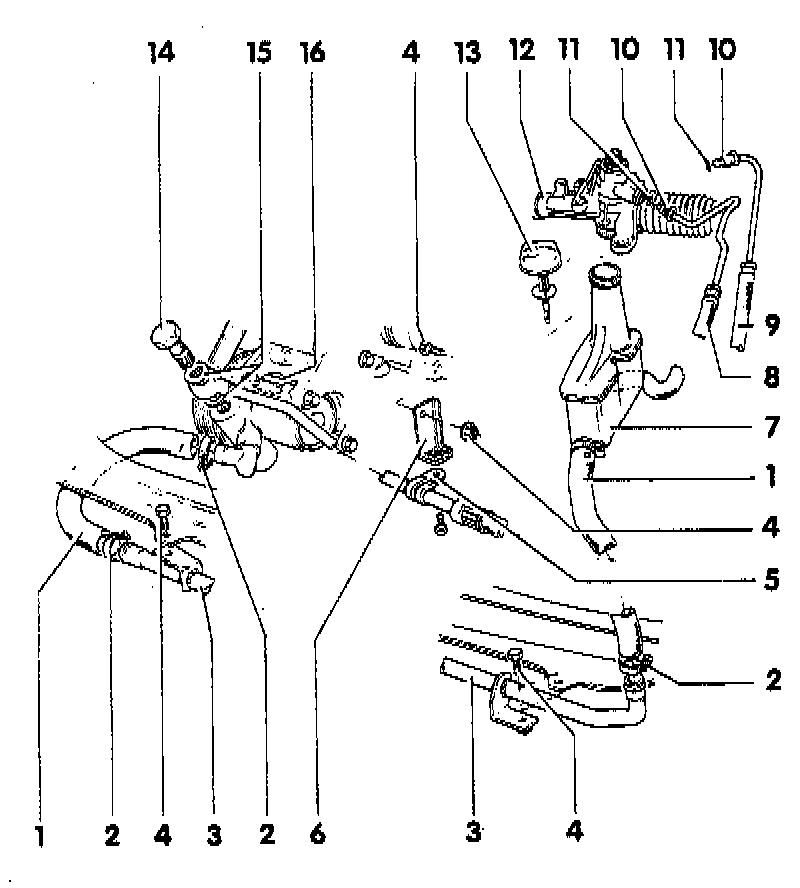

Power Steering Line/Hose: Service and Repair
NOTE:- The power steering pump is not repairable.
- Determine the cause of any malfunctions using the pressure and leakage tests.
- If necessary, replace the pump.
- Power steering pumps supplied as replacement parts are not filled with oil.
- A new pump must be filled with hydraulic oil, Part No. G 002 000, or equivalent, and rotated by hand, otherwise the pump may become damaged or noisy during operation.
- Hydraulic oil type: G 002 000, or equivalent
- Power steering system oil capacity: 0. 7-0.9 liter (0.74-0.95 qt.)

1 Suction Hose
2 Hose Clamp
3 Cooling Fine
4 Bolt
- Tighten to: 10 Nm (82 inch lbs.)
5 Line Clamp
6 Bracket
- Various versions depending upon engine/transmission applications, refer to parts supplier
7 Reservoir
8 Return Hose
9 Pressure Line
- Tighten to: 30 Nm (22 ft. lbs.)
10 Line Union Nut
- Tighten to: 30 Nm (22 ft. lbs.)
11 O-Ring
- Always replace
12 Power steering gear
- Removing/installing. Service and Repair
- Assembly overview. Application and ID
13 Cap with dipstick
- Oil level: must be between MIN and MAX marks
14 Banjo bolt
- Tighten to: 30 Nm (22 ft. lbs.)
15 Seal
- Always replace
16 Power steering pump
- Removing/installing. Service and Repair